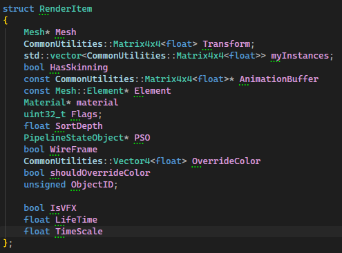
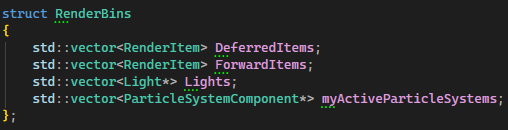
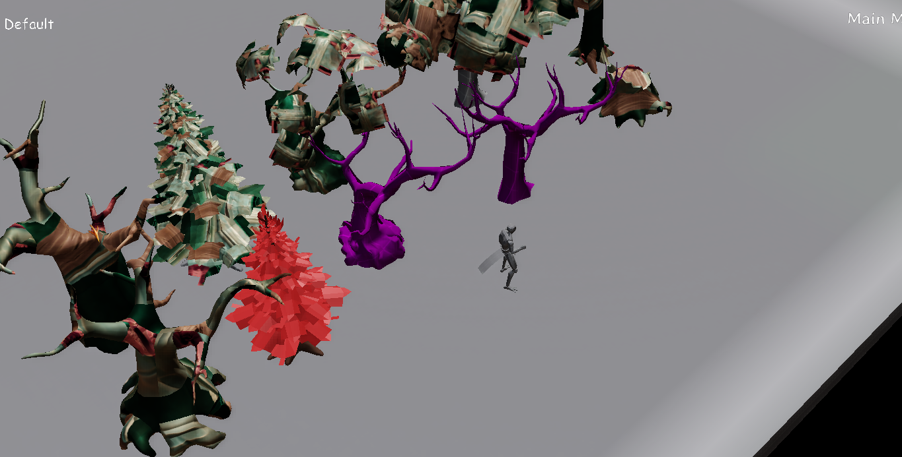
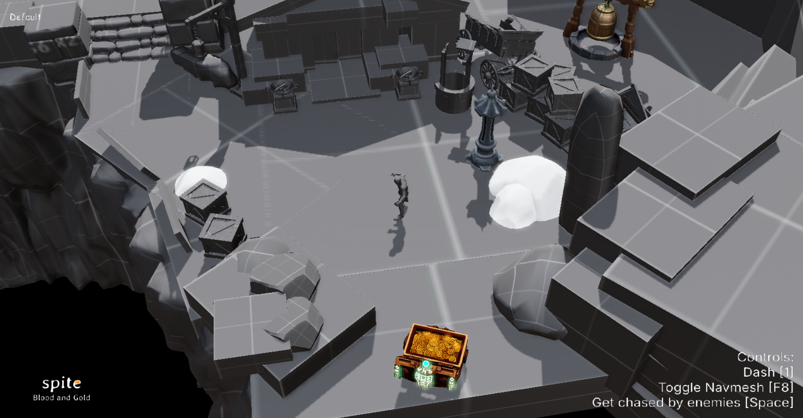
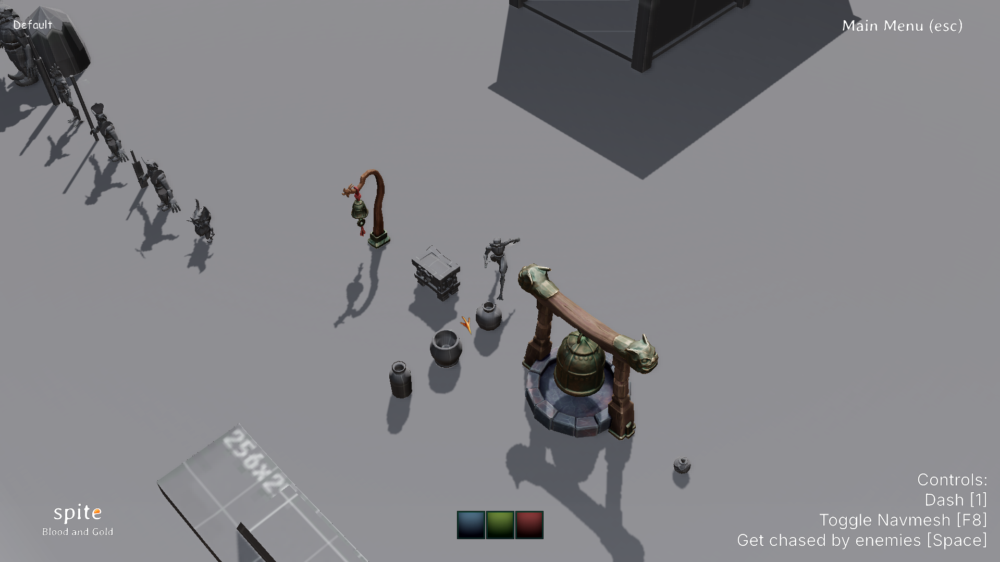

This project was developed over two project periods, pre-production and production. During pre-production, the programmers mainly focused on the graphics engine, engine architecture, and some tool development. In production, the focus shifted more toward implementing game features, while continuing to iterate on the graphics engine and improving pipelines for other disciplines.
During pre-production, I mainly worked on the graphics engine, implementing particles, different render pass stages, and working with the Unreal exporter. During production, I worked with the technical artists to get a working VFX pipeline, while continuing to iterate on the graphics engine and the exporter.
This was the first project we worked on with our permanent group that we got assigned in our second year. Before we started, the programmers sat down and discussed what everyone wanted to focus on. I chose to work on the graphics engine, since I prefer working more behind the scenes with engine systems and tools rather than gameplay programming.
The final goal for pre-production was to build a pipeline to display a diorama level in our engine from Unreal. We used Unreal Engine as a level editor and exported it to JSON format. When we load the JSON in our engine, the result should look similar to how it looks in Unreal.
During the first weeks, I worked mostly on the graphics engine to improve the structure and build a solid base. I implemented a sorter that organizes objects into different containers depending on when and how they should be rendered.
I also implemented a wireframe render pass so we could more easily debug why the enemy AI walked where they shouldn’t. The goal was to verify if it was the navmesh causing the issue. In the end, the wireframe was used for more than just debugging the navmesh.
During pre-production, most of my work was in the graphics engine. Since I enjoyed the graphics course, I wanted to continue developing the engine and explore it further.
At the beginning of development, I reimplemented working code from my own graphics project into the group engine. I reused most of my render passes, with some adjustments, since the overall flow was similar but required structural changes.





The biggest addition I made was the render sorter. The goal of the sorter was to optimize draw calls. It works by separating meshes into different containers depending on how and when they should be rendered.
This made it possible for a single FBX to contain meshes with different material behaviors, such as both opaque and transparent parts.
The sorter was also used for instance batch rendering.
We were given an Unreal exporter from our educator that allowed us to export levels to JSON files, and we could modify it to suit our needs. However, we wanted material data to be stored separately instead of being exported in the level JSON.
To solve this, I modified the exporter to extract material data from Unreal based on specific material parameters. I searched for texture parameters with specific values and converted them into separate JSON files.
When the exporter iterates through objects in a level and reaches a material, it parses it, creates a JSON file, and assigns the material name to that object. This made it easier to debug if the issue was related to a material.
During pre-production, all materials used default deferred settings in the material pipeline. This was a big limitation in production, since we needed support for transparent objects.
To fix this, I implemented a shader preset selector component. This component made it possible to assign different shaders and settings to a specific material. The goal was to support different rendering passes without requiring technical artists or game artists to manually edit JSON files.
Since I was already working on the graphics engine and collaborating closely with the technical artists and shader/graphics programmer, I took on the task of implementing the particle system and VFX system.
The particle system itself was very basic. It worked, but it wasn’t something I was completely satisfied with.
For the VFX system, I experimented with a different approach compared to other teams. Instead of tightly coupling it with the particle system, I built it as a separate system that could work independently, but also be combined with particles if needed.
In the end, the systems were used separately rather than together, but the different approach gave flexibility in how effects could be built.